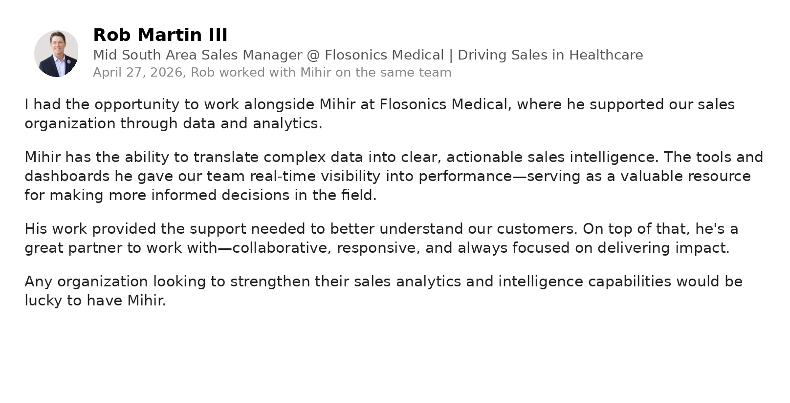
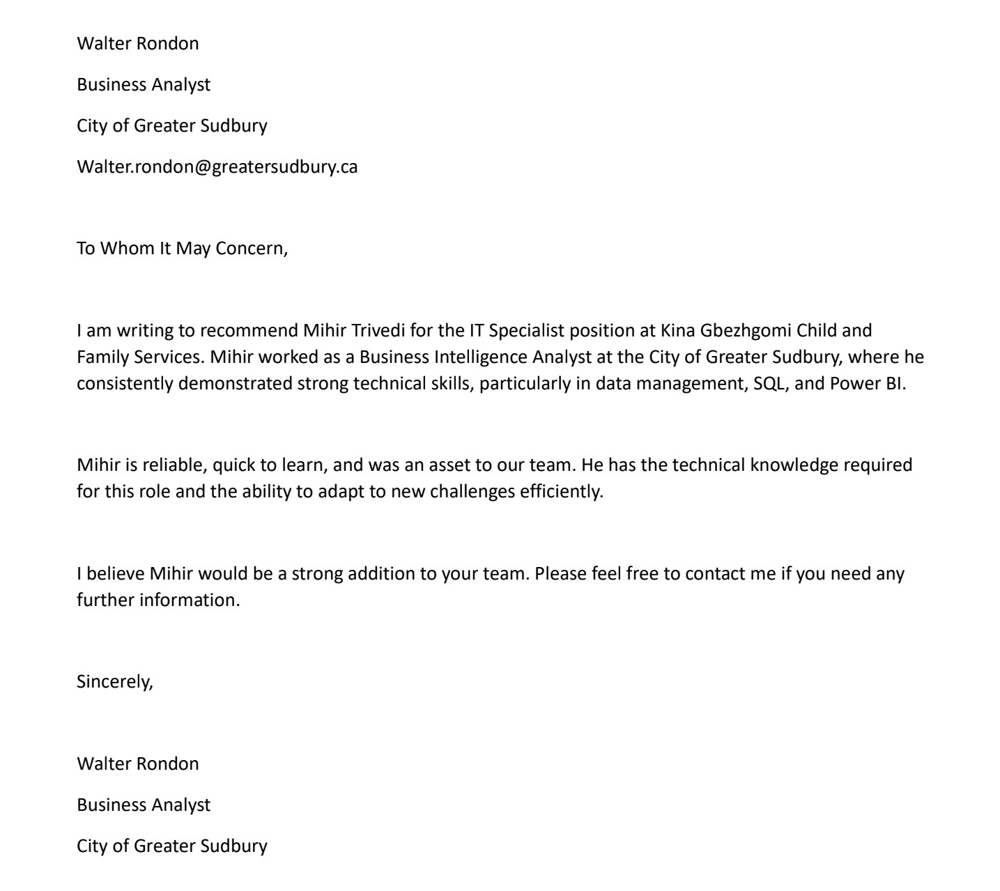

Toronto analytics engineering fit
dbt and SQL
Semantic models
Finance and compliance analytics
ACV Capital, Analytics Engineer IV, Req 5983
Building trusted analytics models that reduce ad-hoc bottlenecks
I build governed analytics layers that turn raw operational data into trusted models, reusable metrics, dashboards, and self-service insights. My recent work spans dbt, PostgreSQL, SQL Server, BI, data quality, Finance reporting, regulated environments, stakeholder enablement, and AI-assisted analytics.
Why ACV Capital makes sense
A direct fit for dbt models, governed metrics, BI, and business-facing analytics
ACV Capital needs someone who can answer urgent questions quickly, then systematically build the dbt models, metric definitions, data quality controls, and BI layer that reduce future ad-hoc work. That pattern closely matches how I have delivered analytics platforms in healthcare, municipal government, and operations environments.
Application narrative
I have already built the same operating model: answer, codify, govern, and enable self-service.
At Flosonics Medical, I built the company's first centralized PostgreSQL and dbt warehouse. I integrated medical device logs with Salesforce, HubSpot, ZoomInfo, and Lead Forensics, then created governed models and reporting outputs for Finance, QA, Production, and HR.
I translated stakeholder requirements into KPI definitions, model logic, reporting views, data quality controls, and documentation. I also automated reporting and reduced manual overhead by 40 percent.
To reduce dependency on technical staff for common questions, I built an internal AI assistant on OpenAI and Gemini APIs so business users could query operational and company information in plain language. That is directly aligned with ACV Capital's self-service and AI-assisted analytics objective.
Production dbt experience
Built and maintained dbt models, governed warehouse layers, reusable transformations, documentation, and reporting-ready datasets.
Complex SQL and model design
Experienced with PostgreSQL, SQL Server, joins, transformations, dimensional modelling, performance-aware querying, and data validation.
Semantic layer mindset
Defined KPIs, DAX measures, reporting logic, standardized metrics, governed datasets, and reusable BI definitions across teams.
Independent ownership
Owned analytics initiatives from requirements and technical design through delivery, training, documentation, and production support.
Analytics stack approach
How I would reduce ad-hoc analytics bottlenecks over time
The best analytics engineering work answers the immediate business question while improving the system so the same question does not require the same manual effort next month.
Triage
Clarify the question, urgency, decision, stakeholders, and whether the request is one-time or likely to recur.
Investigate
Use SQL to inspect source data, joins, funnels, conversion paths, exceptions, freshness, and upstream quality issues.
Codify
Build or improve staging, intermediate, and production dbt models with tests, documentation, and reusable business logic.
Govern
Define metrics in the semantic layer so dashboards, stakeholders, and AI tools use the same trusted definitions.
Enable
Publish BI outputs, train users, support follow-on questions, and move repeatable questions toward self-service analytics.
ACV Capital business domains
How I would think about the lending analytics problem space
I would bring a model-first mindset to Capital analytics: clearly define the entity, event, status, timestamp, metric, denominator, and source of truth before building the dashboard.
Lead targeting
Model dealer and borrower features, activity recency, engagement, historical conversion, product usage, geography, and account attributes to support propensity-style segmentation.
Loan origination funnel
Define application, decision, approval, funding, and completion events with clean stage timestamps so conversion and bottleneck metrics are consistent.
Account management
Track portfolio and servicing workflows through trusted account, dealer, communication, SLA, and exception models that support proactive operations.
Compliance and audit
Use documented definitions, data quality tests, freshness checks, exception reporting, controlled access, and reproducible logic for audit-sensitive outputs.
Proof of work
Relevant experience mapped to ACV Capital
These examples show dbt, BI, data quality, financial stakeholder support, analytics ownership, predictive analysis, and governed reporting.
Analytics engineering and single source of truth
Flosonics Medical
Built a centralized PostgreSQL and dbt warehouse, connected SaaS and device data, defined governed reporting logic, supported Finance and QA stakeholders, automated Tableau reporting, and reduced manual reporting overhead by 40 percent.
Public-sector accuracy and reporting controls
City of Greater Sudbury
Owned SQL Server reporting flows for 911 and Ministry-level submissions, built Power BI reporting, applied validation practices, and documented logic where reporting accuracy carried public-safety consequences.
Predictive analytics and segmentation mindset
Research and machine learning
Built Random Forest classification models in Python, processed large analytical datasets, achieved a 99.5 percent F1 score, and presented findings to academic and industry stakeholders.
Enterprise delivery and Git workflows
Tata Consultancy Services
Led four engineers on high-traffic enterprise platforms, shipped 13 B2B launches, used Git and CI/CD workflows, owned production support, and communicated status and incident findings to stakeholders.
Requirement matrix
Where the ACV Capital requirements meet my evidence
dbt model design
Hands-on warehouse modelling, reusable transformations, governed definitions, reporting-ready layers, documentation, and quality-focused model development.
Expert SQL foundation
PostgreSQL, SQL Server, MySQL, complex joins, transformations, dimensional modelling, large datasets, validation, and performance investigation.
Semantic layer and BI
Power BI, Tableau, DAX, Power Query, KPI definitions, executive reporting, standardized metrics, and governed self-service reporting patterns.
Finance and compliance context
Finance stakeholder reporting, QA and audit-sensitive environments, governed data, confidential information handling, and repeatable reporting logic.
Google Cloud exposure
Cloud SQL Auth Proxy, Google Cloud-connected reporting workflows, cloud data integration, and experience adapting across Azure, AWS, and cloud data platforms.
AI-assisted analytics
Built an internal AI assistant on OpenAI and Gemini APIs, with practical experience making business data easier for non-technical users to query.
Job description snapshot
Analytics Engineer IV, ACV Capital
ACV Capital is seeking a senior analytics engineer to own dbt modelling, data quality, semantic metrics, BI, lending analytics, self-service enablement, and stakeholder partnership across lead targeting, origination, account management, servicing, and compliance.
Role details
- Company: ACV
- Team: ACV Capital
- Role: Analytics Engineer IV
- Req: 5983
- Location: Toronto, Ontario
- Salary: $122,000 to $153,000 CAD
Core responsibilities
- Build staging, intermediate, and production dbt models.
- Enforce quality with tests, freshness checks, and documentation.
- Define metrics and govern the semantic layer.
- Build Omni BI outputs and support self-service and AI-assisted analytics.
- Support lead targeting, origination, servicing, and compliance analytics.
- Own analytical initiatives end-to-end and proactively surface opportunities.
Strongest alignment
- Production dbt and centralized warehouse delivery.
- SQL, BI, model design, data quality, and stakeholder reporting.
- Finance, regulated environment, and audit-sensitive reporting exposure.
- Independent project ownership and cross-functional communication.
- AI-assisted analytics and business-user self-service mindset.
My positioning
I would position myself as an analytics engineer who has already built governed warehouse and reporting foundations from scratch, supported Finance stakeholders, reduced manual reporting work, and experimented with AI-assisted access to business data. The strongest bridge to ACV Capital is the combination of dbt, BI, data quality, stakeholder ownership, and self-service analytics.
Recommendations
What people say about my work
Images are lazy-loaded from the existing media folder so the initial page stays lightweight.
Arash Mahmoudhashemi

Caleb Chin

Isabelle Falzon

Mikayla Scott

Rea Luto

Rob Martin

Yash Sonani

Brandon Pannier

References
People who can speak to ownership and delivery
Colleen Bobbie

Kshitija Suryavanshi

Walter Rondon

Certifications
Technical proof points

Microsoft
Power BI Data Analyst Associate, PL-300
Relevant to semantic models, DAX, Power Query, reporting, KPI logic, and stakeholder analytics.

Microsoft
Power Platform Developer Associate, PL-400
Relevant to business applications, automation, system integration, and workflow improvement.

Microsoft
Azure Fundamentals, AZ-900
Relevant to cloud data platforms, security, governance, and modern analytics architecture.

Salesforce
Agentforce Specialist, AI-201
Relevant to AI-assisted analytics, CRM data, and enabling business users through enterprise AI workflows.
Contact
Ready to discuss ACV Capital analytics engineering
I can discuss how I would structure dbt layers, define Capital KPIs, build quality controls, reduce ad-hoc reporting dependency, and prepare trusted models for BI and AI-assisted self-service analytics.